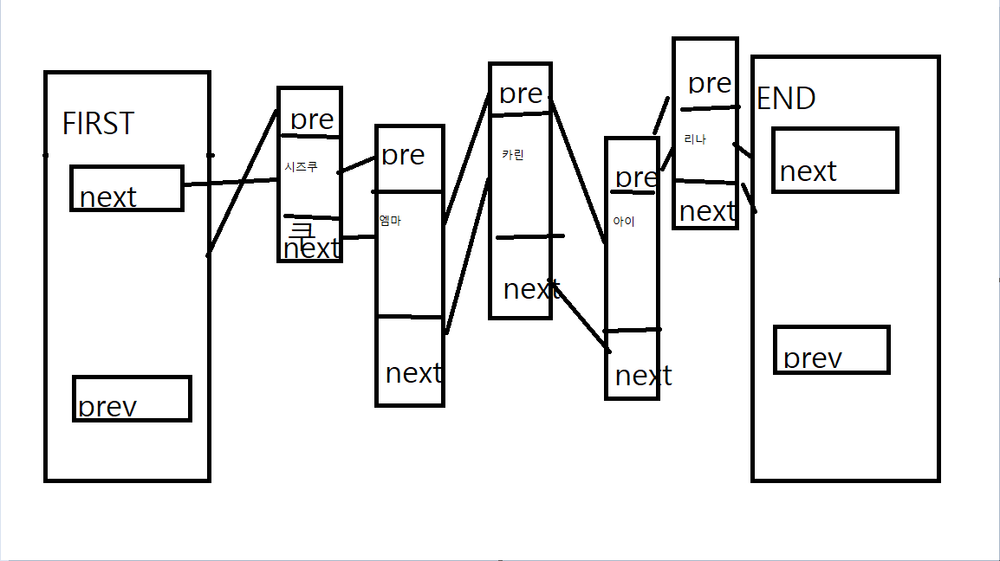

1. 포인터의 개념
1-1. 포인터란
포인트, 영어로 쓰면 point일겁니다. 말그대로 무언가를 가리킨다는 의미입니다.
우리가 프로그래밍을 하면서 변수를 선언하면, 그 변수는 메모리에 선언한 변수의 자료형만큼 메모리를 차지하게 됩니다.
그때 &는 그 변수가 위치하는 주소를 반환하게 됩니다.
그리고 *는 그 변수의 불러온 주소값에 들어있는 값을 접근할때 씁니다. 직접 코드를 보면서 확인해봅시다.
1-2. 포인터를 대체 왜 쓰지?
-
변수의 지역성: 포인터가 아닌 변수들은 지역성을 가집니다.
이게 무슨 말이냐 하면, 함수 안에서 선언된 변수는 함수 안에서만 사용될 수 있다는 이야기입니다.#include <iostream>void swap(int kasukasu,int aisan){int temp= aisan;aisan= kasukasu;kasumi= temp;}void main(){int kasumi= 20;int Ai= 122;swap(kasumi,Ai);std::cout<< "kasumi의 값 : " << kasumi << std::endl;std::cout<<"Ai 값 : " << Ai << std::endl;}왜 바뀌지 않았을까요? 기본적으로 c++는 call by value 방식으로 함수 인자를 받습니다.
결국 새로운 변수를 할당하여, 그 공간에서 서로 바꿔주기 때문에 원래 값에는 영향을 주지 않습니다.#include <iostream>void swap(int* kasukasu,int* aisan){int temp= *aisan;*aisan= *kasukasu;*kasumi= *temp;}void main(){int kasumi= 20;int Ai= 122;swap(kasumi,Ai);std::cout<< "kasumi의 값 : " << kasumi << std::endl;std::cout<<"Ai 값 : " << Ai << std::endl;}이번에 바뀐 이유는, call by reference로 인해 주소값이 복사 되었기 때문에, 주소 안에 있는 숫자의 값에 직접 들어가 바뀌주었기 때문입니다.
포인터가 꼭 필요한 이유 중 하나가 이것입니다. - 메모리를 직접 할당해옴: 아래 링크드 리스트에서 설명 드리겠습니다.
2. 링크드리스트
2-1. 동적 할당과 정적 할당
링크드 리스트, 즉 연결된 리스트를 이해하기 위해선, 동적할당이 무엇인지 이해해야합니다.
정적할당의 예시엔 대표적으로 배열이 있습니다. 배열의 개수를 정적할당으로 선언할 경우엔, 스택 영역에 선언되게 됩니다.
delete [] kasumings;
- new: 메모리를 할당해오는 예약어입니다. 힙 영역은 스택에 비해 훨씬 크기 때문에 자유롭게 잡을 수 있습니다.
- delete: 가져온 메모리를 운영체제에 반환시켜지 않으면 낭비됩니다.
2-2. 링크드리스트 보기

이렇게 배열의 단점을 해결하기 위해 나온 자료구조가 링크드리스트입니다.
소스코드를 보시면 아시다싶이, 계속해서 new로 새로운 노드(구조체)를 할당해와서, 추가해주는 중입니다.
next는 다음 노드의 주소, pre는 전 노드의 주소를 가지고 있어, 서로가 서로에 접속할 수 있는 더블링크드리스트입니다.
3. 느낀점
옛날에 C++를 혼자 독학할때 많이 해맸던 부분이지만 해본 만큼 자신있었던 부분이고, 재밌었습니다.